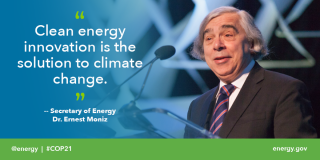

By any measure, Energy Secretary Ernest Moniz had a busy year. From becoming a meme and a knight, to playing a key role in two historic, science-based international policy agreements, everyone's favorite Energy Secretary never slowed down.
Storified by Energy Department ·
Wed, Dec 23 2015 14:56:27
Take a look at the best highlights of Secretary Moniz's 2015.
Secretary Moniz's year started off with a bit of a surprise. During President Obama's State of the Union Address, he found out what it means to become an internet meme.
While social media had a field day over his hairdo, Secretary Moniz was paying attention to these impressive facts about American energy production.
After the jokes subsided, it didn't take long to get down to more serious business.
In late February, President Obama asked Secretary Moniz to join Secretary of State John Kerry for negotiations over the future of Iran's nuclear program to ensure it remains exclusively peaceful. When the talks between world powers and Iran hit technical roadblocks, Secretary Moniz, a nuclear physicist, brought his scientific expertise to complement Secretary Kerry's diplomatic chops.
Over the next month-and-a-half, the two Cabinet Secretaries traveled numerous times between Washington and Switzerland to hammer out the building blocks for a deal. On April 2, after a series of all day, all night negotiations, the P5+1 nations (China, France, Russia, the U.K., the U.S. and Germany) and Iran announced a framework agreement. The framework laid out parameters for a final deal to be completed by July.
This progress was big news, but it didn't distract from important issues back here in the U.S. Shortly after returning from the negotiations, Secretary Moniz joined Vice President Biden in Philadelphia to announce a major plan to modernize our nation's energy infrastructure called the
Quadrennial Energy Review (QER).
He took to the airwaves to explain the framework Iran agreement and the QER, including an
appearance on The Daily Show with Jon Stewart.
When he wasn't working on the Iran negotiations or energy infrastructure, Secretary Moniz was busy focusing on climate change. On Earth Day, he delivered an inspiring message about the road to a clean energy future.
"This really has to be Earth Year."
By summer, the Iran talks picked up steam again as the negotiators made progress filling in the details of a final agreement. Secretaries Kerry and Moniz arrived to seal the deal with a final marathon of nineteen long negotiation days in Vienna, a record for a foreign trip by any Cabinet secretary, let alone two.
Negotiators ran out of clothes, consumed prodigious amounts of
Twizzlers, and functioned on little to no sleep.
During a brief lull in the talks, Secretary Moniz managed to visit his grandparents' native Portugal to get knighted--yes, knighted. The medal and sash are now favorite conversation pieces in his office.
As if receiving the honor previewed good things to come, the negotiating teams broke through some of the final sticking points in the next few days and sat down to write the final text.
On July 14th, the P5+1 nations and Iran agreed to a Joint Comprehensive Plan of Action, known as the Iran Deal.
The Iran Deal was a historic first, establishing the most intrusive nuclear inspections ever agreed to.
However, the deal faced critics back home. Through testimony on Capitol Hill, countless interviews, videos and op-eds like the ones below, Secretary Moniz used his nuclear expertise to explain the science behind the landmark agreement.
 Science-based Nuclear Security and the Iran Agreement - The Iran Deal
Science-based Nuclear Security and the Iran Agreement - The Iran Deal
And more than 70 nuclear nonproliferation specialists wrote: "... the agreement will reduce the risk of a destabilizing nuclear competition in a troubled region- giving time and space to address other regional problems without fear of an Iran armed with nuclear weapons - and head off a catastrophic military conflict over Iran's nuclear program."
Even though they discussed serious topics like the Iran Deal, the excitement was warranted; just look at this great photo Stephen took with Secretary Moniz behind the scenes.
Once again, it was time to explain the Iran Deal--this time to Esquire.
Once the Iran Deal cleared Congressional review, Secretary Moniz had time to visit student teams at the Solar Decathlon, a 2-year-long competition to design and build solar powered houses.
A few weeks later, the Iran Deal became official.
And before long, Secretary Moniz returned to the international stage to zero in on climate change. He helped build momentum for a global agreement at COP21, the UN climate conference in Paris in December, by championing a simple but important message.
He began by delivering a major progress report on clean energy in the United States a few weeks before world leaders gathered in Paris, showing the U.S. is backing our words on climate with action and investment.
And while the progress in the United States is significant, the fight against climate change requires more than the technologies we have today (and more than just the United States.)
That's why President Obama announced the United States and nineteen other nations will seek to double their investments in clean energy research and development by 2020 through a major initiative called
Mission Innovation.
A few days later, Secretary Moniz joined world leaders and their negotiating teams in Paris to work towards a major global agreement to address climate change. The State Department led negotiations, while Secretary Moniz played a critical role promoting clean energy technologies to the tens of thousands of attendees.
He emphasized that we can solve climate change and how we can do it.
How We Solve Climate Change
World leaders are gathering in Paris this week for the 21st United Nations climate conference, known as COP21. Our mission: Secure an ambitious global agreement to reduce carbon dioxide emissions and minimize climate change.
As the negotiations came down to the wire, some spectators worried a final deal would become too watered down to be meaningful. But on Saturday, December 12th, nearly 200 nations adopted the robust final text of the Paris Agreement.
The accord in Paris was the first global agreement to combat climate change, marking a turning point toward a clean energy future for the United States and the world.
Now the real work begins.
Mission Innovation and other clean energy initiatives will be important vehicles for achieving our collective carbon reductions goals in the decades ahead.
Looking ahead to 2016 and beyond, if we can learn anything from Secretary Moniz's 2015, it's how to approach big problems.
The Iran Deal and Paris Agreement combined science, optimism and pragmatism to address monumental challenges facing our climate and nuclear security. Both proved that when the world comes together to make bold commitments, we can overcome skepticism and choose a safer, cleaner, more prosperous world.
2016 is the last full year of the Obama Administration, and Secretary Moniz has plenty left to accomplish. If the new year is anything like this one, we have a lot more progress to look forward to.